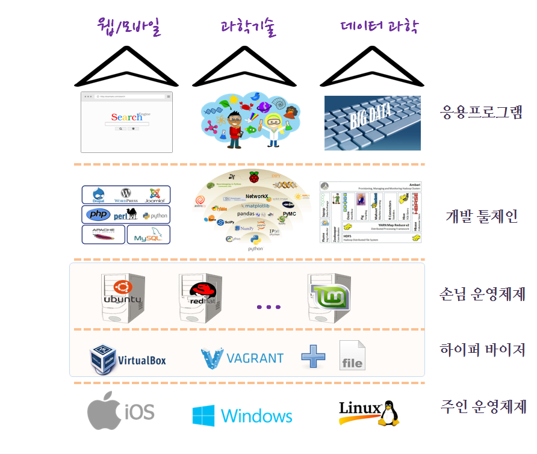
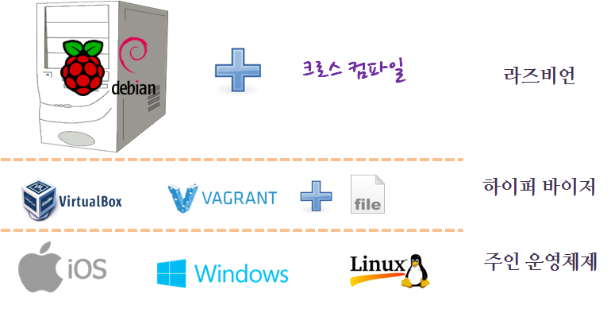

xwMOOC 컴퓨터
라즈베리 파이 가상화 환경
학습 목표
- 라즈베리 파이 가상화 환경에 대해 이해한다.

1. 라즈비언 가상화 설치
라즈베리 파이 하드웨어가 아닌 노트북이나 개인용 컴퓨터에 가상상자와 부랑자를 사용해서 라즈비언을 설치하는 것이 필요한 이유가 있다. 라즈베리 파이 하드웨어에서 리눅스 커널을 컴파일 작업을 할 경우 상대적으로 부족한 컴퓨팅 자원으로 인해서 시간이 매우 많이 소요되고 관심있는 실험을 추진하는 것이 비용과 시간이 많이 들 수 있다.
가상컴퓨터에 라즈비언 운영체제를 설치하고 간단한 실험을 마친 후에 라즈베리 파이 하드웨어에 최종 작업 결과물을 넣는 것도 한가지 좋은 대안이 될 수 있다.

1.1. GEMU 에뮬레이터 사용 라즈비언 설치
참고: Raspberry Pi Emulation for Windows with QEMU
1.2. 가상상자에 라즈비언 설치 (2013년 01월)
- 라즈베리 파이 가상상자
.ova파일을 찾는다.- utorrent 같은 P2P 다운로드 프로그램이 필요할 수 있다.
- 토렌트 다운로드 파일 참조
- 엘리먼트14 RaspberryPi-Development-VM-v0.8.ova 파일을 다운로드한다.
File→Import Appliance명령어로 다운로드 받은.ova이미지를 가져온다.- 토렌트에서 받은 것은 라즈비언 이미지 보다는 오래된 리눅스 이미지로 보면 된다.
- 엘리먼트14
.ova파일은 거의 9 GB로 크다.
1.3. Adafruit 라즈베리 파이 Kernel-o-Matic
Raspberry Pi Kernel-o-Matic을 사용해서 맞춤형 커널을 신속하게 생성할 수 있다.
- 의존성 설치
- 가상상자 시작
- 커널 만들기
- 커널 라즈베리 파이 설치